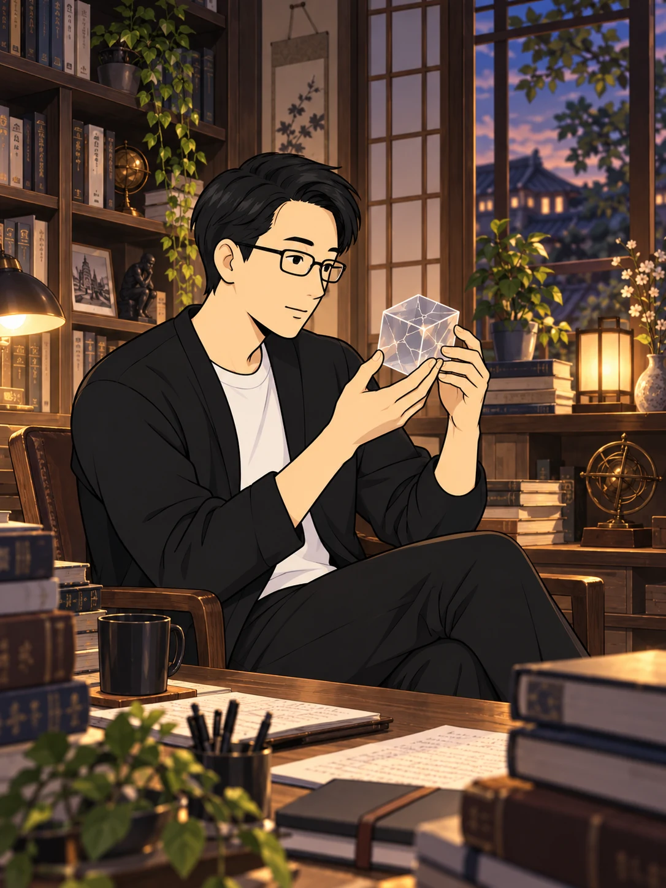
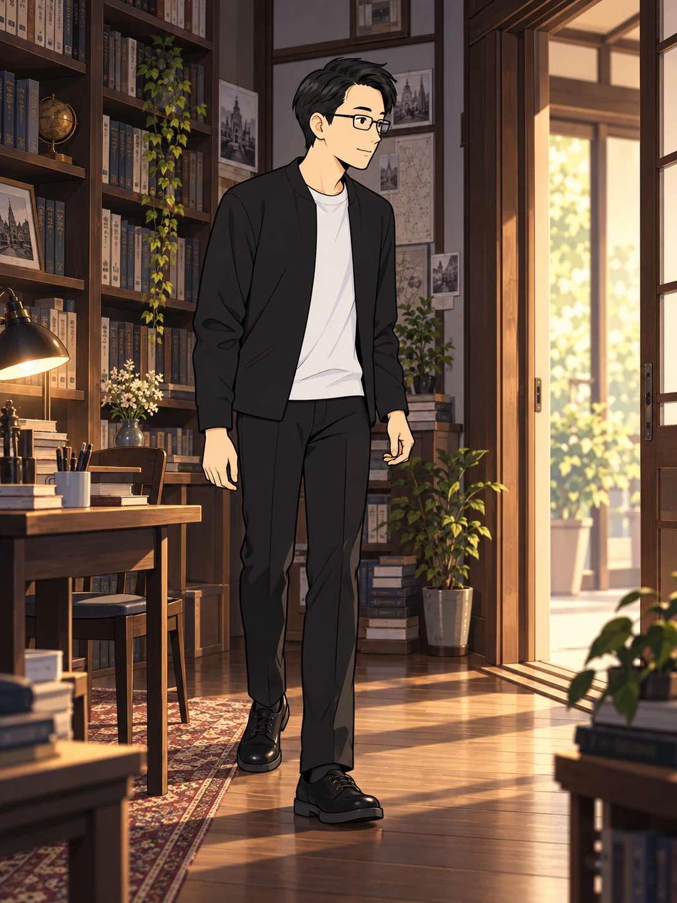
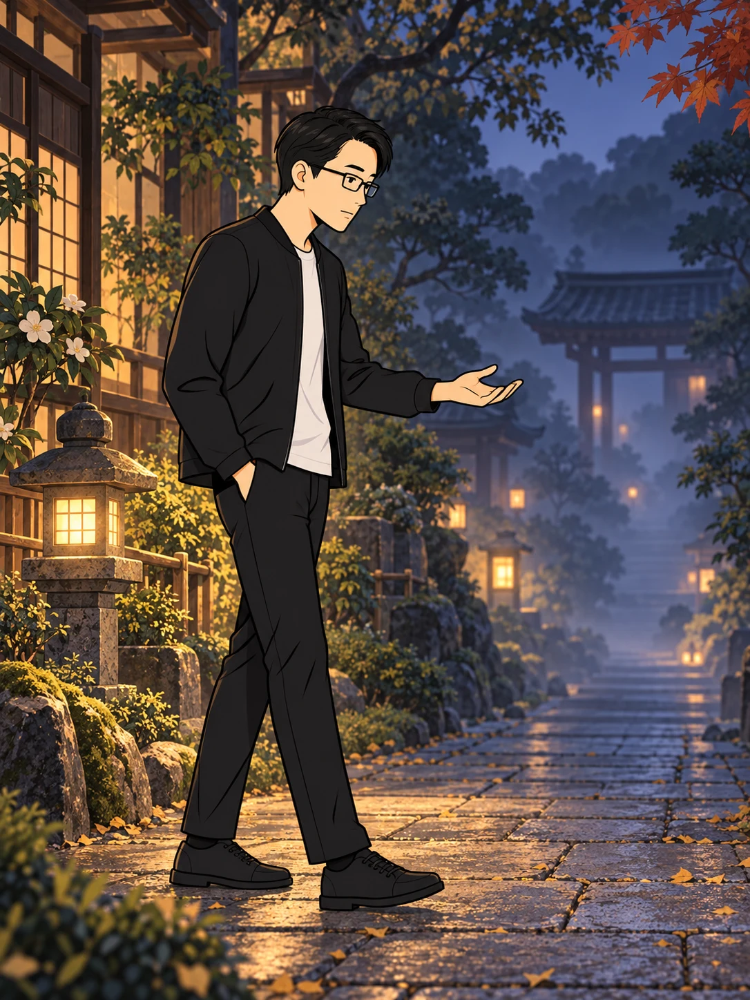
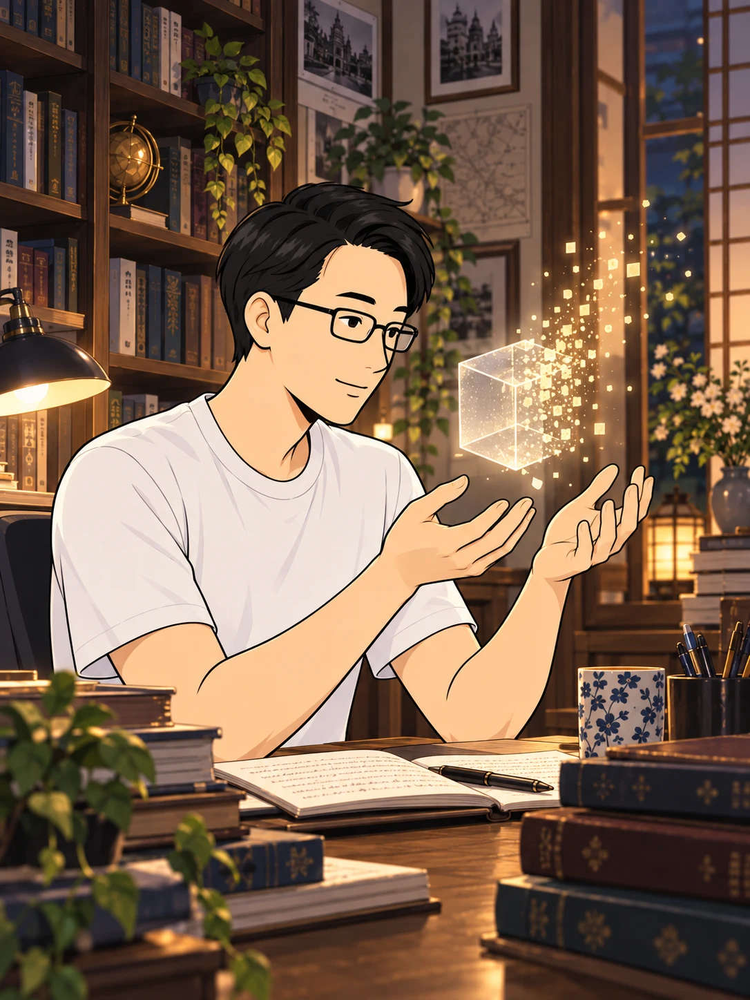
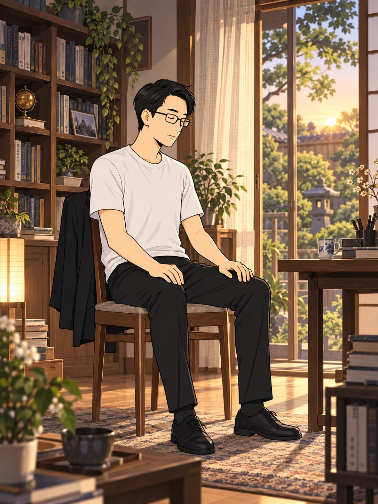
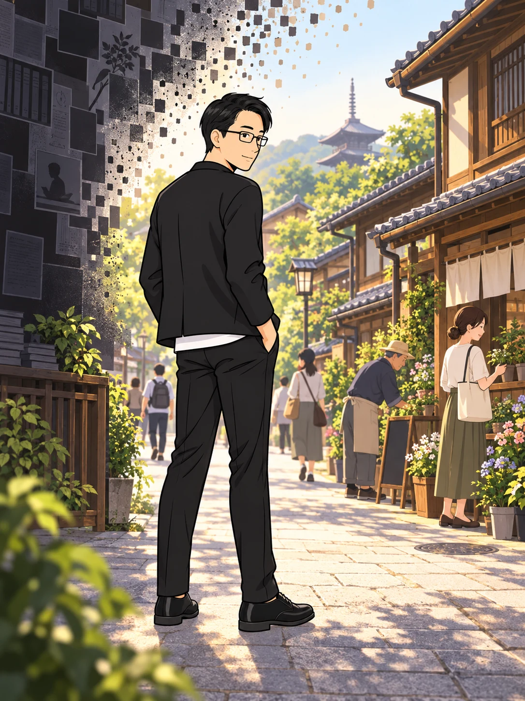

霊現象を卒業した空不動先生を待っていたのは、
自らの知識や頭脳という、大きな壁だった。

考えても、考えても……
同じ場所に戻ってしまう。
積み重ねた知識だけでは、
越えられないものがあった。
大切に守ってきた、
「自分は正しい」という確信。

自分が正しいと思う判断……
これこそが、真理を遮る
「真理もどき」ではないか？
問いは、自分自身へと向かった。
正しさを握りしめたままでは、
見えないものがある。

常識も、知識も、
自分が正しいと思う判断も……
いったん、手放そう。
空不動先生は、この決断を
「判断放棄」と呼んだ。
頼りにしてきた確信を手放す。
その先に何があるのかは、わからない。

怖い……。
それでも、自分のエゴに
しがみついたままでは進めない。
まるで、行く先を覆う霧の前で
立ち止まっているようだった。
握りしめていたものを、
静かに、ほどいていく。

私は、自分の知識を
真理そのものだと
思い込んでいたのだ。
「自分が正しい」という執着が、
少しずつ、手を離れていく。
力が抜けると、
胸の内に静けさが訪れた。

自分の判断を、リセットする。
神よ、私を完全な
「空」にしてください。
答えで埋めようとしていた心に、
余白が生まれた。
自らの確信を手放したとき、
それまでの壁が、ほどけていくように感じた。

その向こうに、
まだ知らない世界の兆しがあった。